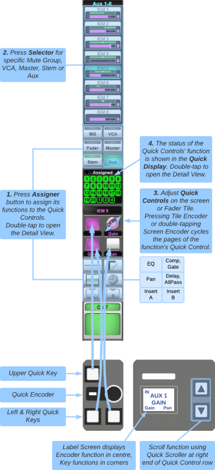
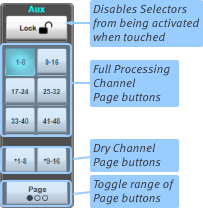

Quick Controls
Quick controls are the physical encoder & three buttons at the top of each Fader Tile. These controls provide quick access to input gain, trim, & route displays, signal processing, sends, pan, and VCA and mute group assignment. Their soft function is always displayed at the bottom of the main screen channel view.

Quick Controls can also be cycled through directly on the tile using the Fader Tile's ▲/▼ buttons above the Enter key.
- Assign frequently used sections (e.g. Gain, Pan) to User Keys for easy access.
- Press & hold the Control Tile processing function keys to assign that section to the Quick Controls as well as the Control Tile screen.
To assign a function to the Quick Controls, touch one of the assigner buttons on the main screen:
- Input parameters are assigned by touching the top-most block of the strip on the screen.
- MG and VCA control the path assignment to mute and VCA groups.
- Fader replicates the hardware path fader, primarily for the SOLSA offline software.
- Master, Stem and Aux control the path's send to these buses.
- Below the on-screen Quick Controls, the top-left button accesses EQ;
- Top-right accesses Dynamics.
- The middle-left button accesses Pan;
- Middle-right accesses Delay and All Pass filter.
- The lower buttons access Insert A & B.
The top block of the channel strip displays Digital Trim in blue or Analogue Gain in red, depending on which parameter was last selected to the input Quick Controls.
When selecting MG, VCA, Master, Stem or Aux, the precise bus or group you want to access needs to be selected from the individual 'selectors' that appear above the assigner buttons.

Lock on the right of the main screen defines what happens when a selector is touched:
- When locked, the selector is assigned to the Quick Controls only. This is the safest mode of lock.
- If unlocked the selector is assigned and toggled. Great for fast setup but be careful operating in this mode!
- If there are more than eight of a type (for instance 16 Stems), they are navigated using the numbered buttons below Lock. If there are more selectors than appear in the page buttons, press Page to toggle the page buttons between 1-48, 49-96 and 97-144.
The ▲/▼ buttons on each Fader Tile can be used to scroll through the Quick Controls, indicated in the scribble display to the right of the tile.
Holding the ▲ key will jump to Input for gain/trim adjustments. Holding the ▼ key will jump to Pan.
When the Quick Controls are assigned to sends, VCA's, or mute groups, the Enter button switches whether the ▲/▼ keys scroll the function 'assigners' (Aux, EQ, etc.) or the group/send 'selectors' (Aux 1, Aux 2, etc.).
Holding ▲ or ▼ when Enter is active will jump the group/send selectors in blocks of eight for quick navigation through large lists.
Quick Controls are altered via the main screen or the Fader Tile. To rotate on-screen encoders, touch them and drag up/right to increase or down/left to decrease the parameter value.
There may be multiple pages of Quick Controls per function; these pages can be cycled by pressing any physical quick encoder, or double-tapping the on-screen encoder.
For example, input Quick Controls can toggle between analogue gain, digital trim, or route information. EQ Quick Controls will cycle through the four bands and filters. Dynamics toggles between compressor or gate, and so on...
The switches are used to switch states of a parameter or to assign functions to the encoder. To view the way specific functions are assigned to the Quick Controls, please go to that function's page within the SSL Live Help System.
Note: The Fader Tile Flip button 'flips' the quick encoder function onto the fader, and the fader function is assigned to the quick encoder. This is great for building sends quickly on faders.Above the screen Quick Controls is the quick display, which displays information about whatever is being adjusted. Double-tapping the Quick display opens up the channel detail dialogue, where more detailed parameters can be adjusted.
The assigner button LED indicates status:
- MG and VCA display an orange light to indicate there is at least one active group.
- Stem & Aux go from red to green indicating a send is active.
- Fader goes from green to red when the path is muted.
- EQ, Dynamics, and Pan display a simple version of their graph.
- Delay and Insert become coloured when they are engaged.